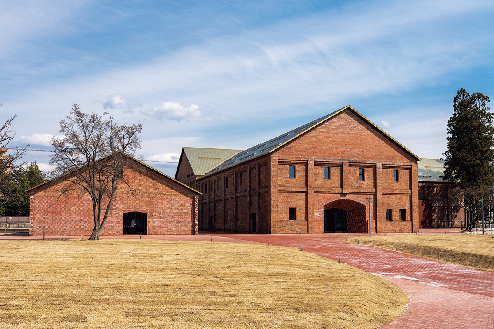
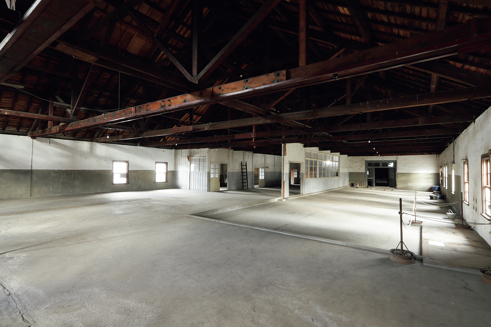
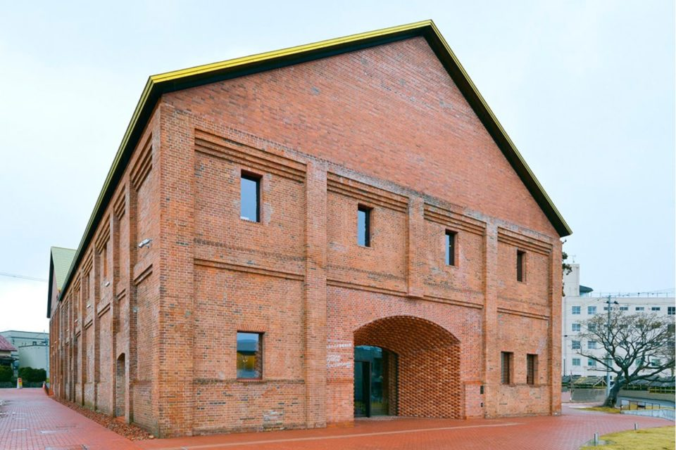
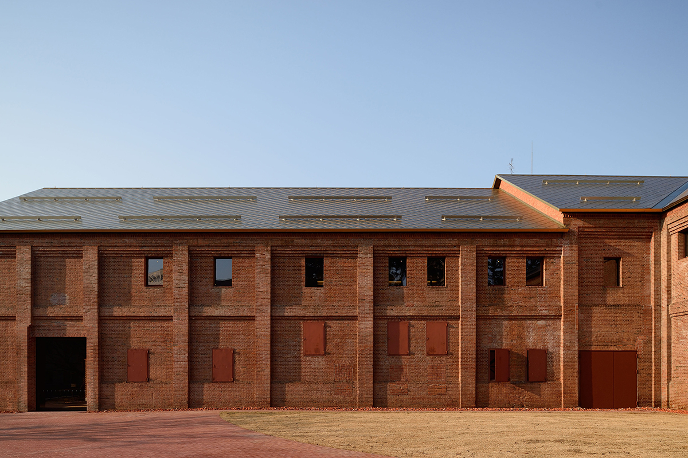
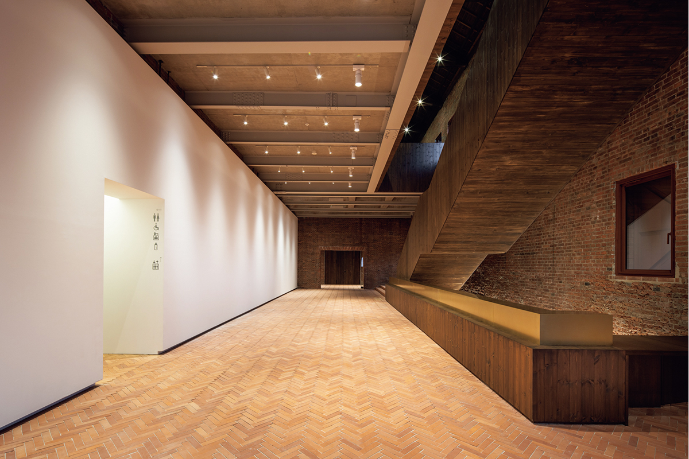
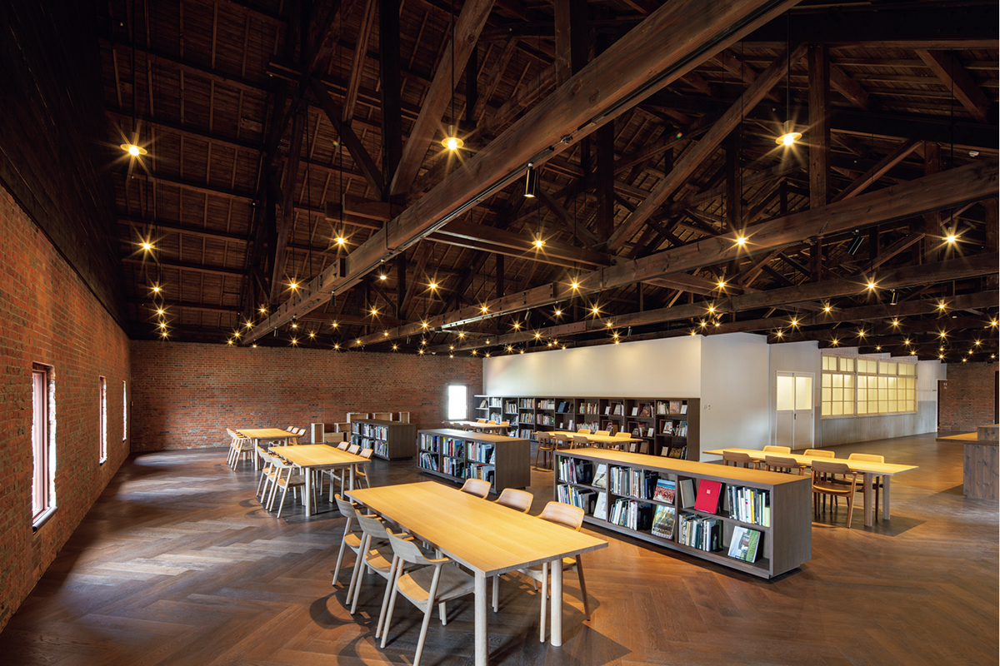
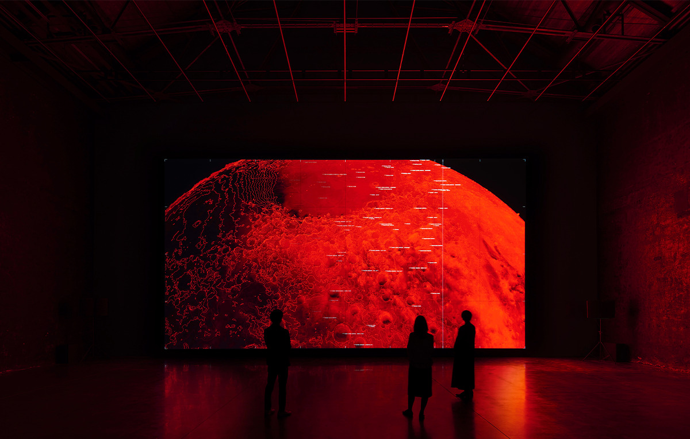
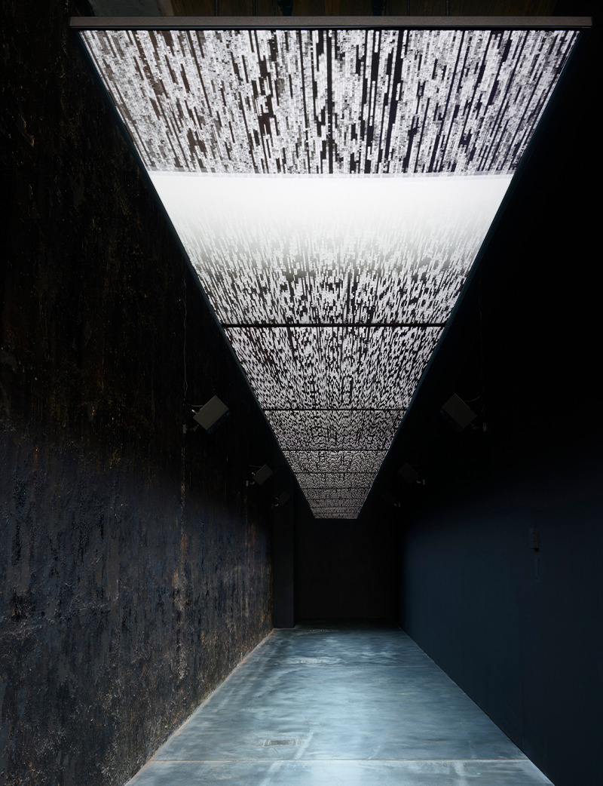
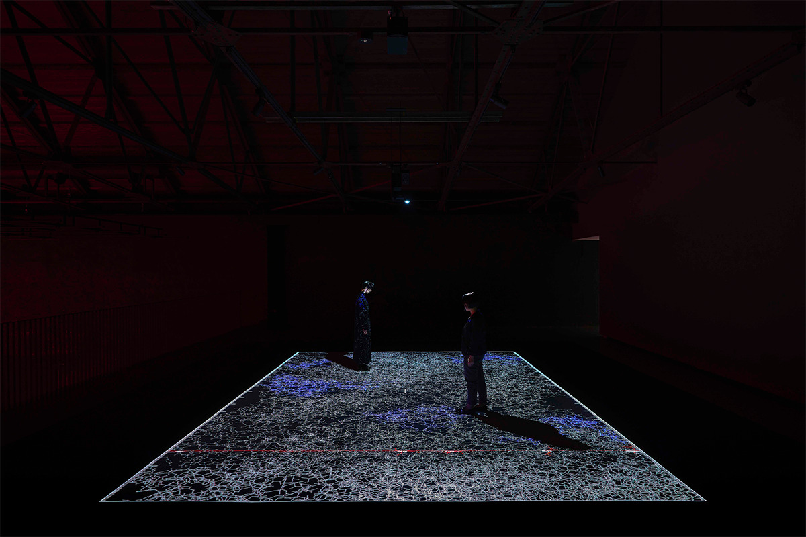

Префектура Аомори · Хиросаки · архитектура и искусство
Музей «Кирпичный склад» в Хиросаки: из сакэварни и сидровой фабрики в дом современного искусства

В Хиросаки, городе яблок, вдоль реки Цутибути тянется квартал красных кирпичных складов. Здесь варили сакэ, потом сидр, потом хранили грузы, а с 2020 года здесь работает музей современного искусства.
История
Сакэ, сидр и склад
Художественный музей «Кирпичный склад» Хиросаки занимает кирпичные здания, построенные с 1907 по 1923 год. Их возвёл уроженец Хиросаки, предприниматель и пивовар: сначала здесь варили сакэ, затем сидр. Именно в этих стенах впервые в Японии начали всерьёз производить сидр. Позже здания служили обычным складом.
Музей стоит в Хиросаки, известном как город яблок, и сама массивность кирпича рассказывает, как здесь появились и уцелели здания, где варили сакэ и сидр. Спустя около ста лет после постройки комплекс превратился в музей.

Архитектура
Проект Цуёси Танэ
Реконструкцию провёл Цуёси Танэ, архитектор, который работает в Париже и построил, среди прочего, Национальный музей Эстонии. Свои проекты он начинает с того, как место использовалось раньше и какие следы это оставило. Здесь он прочитал очертания и фактуру старой кирпичной кладки и добавил то, что нужно музею: маршруты для посетителей и места, где можно задержаться. Красные кирпичные стены и залы с высокими потолками по возможности сохранили в прежнем виде, чтобы память места перешла в будущее.

Первое, что бросается в глаза снаружи, это крыша. Обветшавшую кровлю заменили титановой, уложенной ромбами. Её оттенок назвали «сидровое золото», и он меняется вместе с погодой и светом. Над тяжёлым кирпичом появилась блестящая крыша, и в одном здании сошлись разные эпохи.

Замысел реконструкции яснее всего виден в новом входе. Кирпичи здесь уложены вразбежку, а сверху кладка сходится в арку. Танэ назвал этот приём «хиросакской кирпичной кладкой». Вход рассчитан на край, где много снега и дождя, и при этом сложен из кирпича, как и старые стены.
Внутри большие пространства склада стали основой экспозиции: в них помещаются работы любого размера и способа монтажа. Залы не выравнивали под один стандарт, стены с каменноугольной смолой оставили как были. Посетитель смотрит на искусство и одновременно видит следы того, как жило здание.

Музей
Не только залы
Музей не ограничивается выставочными залами. В здании есть городская галерея и студии для жителей, а также кафе и музейный магазин. Бывшая пивоварня открыта городу как место, куда приходят не только смотреть, но и встретиться, посидеть, провести время.

Музейный корпус двухэтажный. Ближе ко входу собраны студии, которые можно арендовать, бесплатная библиотека и городская галерея, а дальше идут пять выставочных залов. В соседнем корпусе с кафе и магазином можно попробовать, например, сидр из яблок Аомори.
Реконструкция не пыталась законсервировать прошлое. Танэ взял за основу накопленные материалы и устройство здания и придумал для них новое общественное назначение. Красный кирпич, новая кладка, крыша, ловящая свет, и разные интерьеры в каждом пространстве: по ним можно проследить время, которое накопил Хиросаки.
У поездки за искусством по Аомори в 2020 году появилась ещё одна цель: к Префектуральному художественному музею Аомори и Художественному центру современного искусства Товады добавился музей в Хиросаки.
Выставки
Зал высотой 15 метров
Главный зал музея поднимается на 15 метров, а стальной каркас и чёрные смоляные стены сохранились со времён склада. Это пространство хорошо показала выставка Рёдзи Икэды, композитора и художника, который работает во Франции и Японии. Выставка шла до 28 августа 2022 года и стала его первой крупной персональной выставкой в японском музее за 13 лет.



Художественный музей «Кирпичный склад» Хиросаки
- Адрес
- префектура Аомори, Хиросаки, Ёсино-тё, 2-1
- Телефон
- +81 172-32-8950
- Часы работы
- 9:00–17:00 (с декабря по март с 9:30)
- Выходные
- вторник (если это праздник, то следующий день), новогодние праздники
- Цены / Вход
- зависят от выставки
- Сайт
- hirosaki-moca.jp
Фото: Масаюки Хасэгава, Куния Оямада, Го Асано.